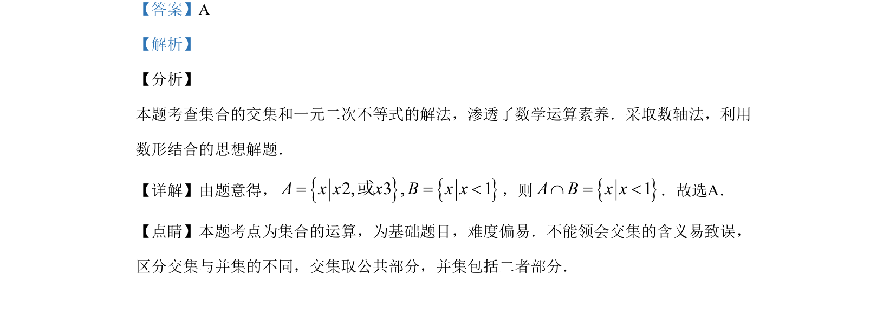

考点：交集运算 一元二次不等式
本题主要考查集合的交集运算和一元二次不等式的解法。

📄 原 PDF 第 1 页：
素材/真题/吉林/2008-2024·（吉林）数学高考真题/2019年高考数学试卷（理）（新课标Ⅱ）（解析卷）.pdf
1.设集合A={x|x2-5x+6>0}，B={ x|x-1<0}，则A∩B= A. (-∞，1) B. (-2 ，1) C. (-3，-1) D. (3 ，+∞)
【答案】A 【解析】 【分析】 本题考查集合的交集和一元二次不等式的解法，渗透了数学运算素养．采取数轴法，利用 数形结合的思想解题． 【详解】由题意得，{}{}2, 3 , 1A x x x B x x= = <或，则{}1A B x xÇ = <．故选A． 【点睛】本题考点为集合的运算，为基础题目，难度偏易．不能领会交集的含义易致误， 区分交集与并集的不同，交集取公共部分，并集包括二者部分．